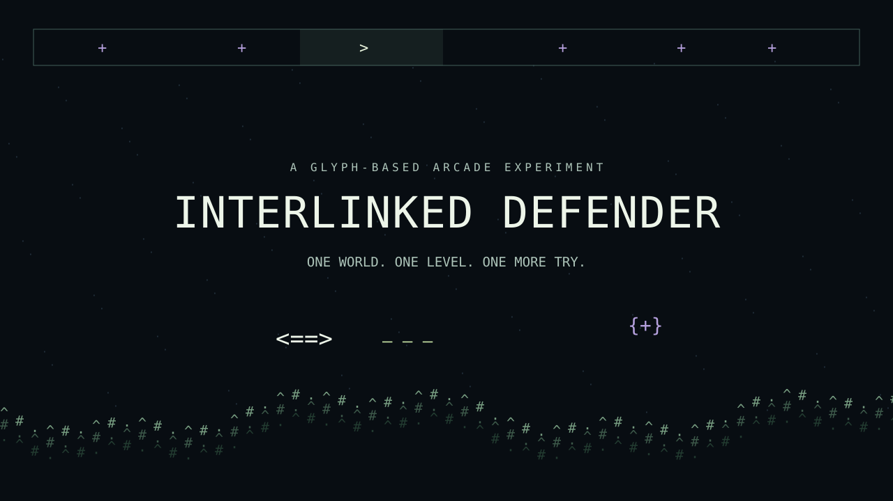

Game experiment · October 2026 · Level 1
Interlinked
Defender
An old arcade idea.
A new world made of glyphs.
A father–son experiment by John and Toby Rice: take the immediate pleasure of a scrolling arcade shooter and build a small, playable world in the browser. Made to explore together, on a computer or a Raspberry Pi connected to a television.

The idea, re-done
The starting point is the classic arcade game Defender: a ship, a scrolling landscape, threats arriving from different directions, and a radar view that asks you to think beyond the screen. That relationship between close-up action and awareness of the whole world still feels compelling.
This version interprets that idea through ASCII and glyph-based graphics. Repeated marks become terrain, machines, enemies, and motion. Color, spacing, contrast, and sound carry the information. The interest is in how much a small visual vocabulary can communicate.
The scope is deliberately one level: survive a roughly one-minute patrol, then destroy a descending mushroom-shaped mothership before it touches down. A short loop with a clear escalation, a win, and a reason to try again.
What’s inside
A world beyond the screen
A centered scrolling camera with directional lead, plus a tactical sector scanner showing the wider encounter.
Movement with intent
Four-direction flight, directional fire, and a double-tap boost for escaping danger or closing the distance.
A changing encounter
Two small enemy types build pressure before the mothership alert and landing countdown change the objective.
A world you can hear
Chiptune music, weapon and boost effects, and spoken cues announce the swarm, the mothership, and game over.
A live tuning console
Adjust speed, enemy count, timing, audio levels, glyph style, color, and scanlines to explore how the same system feels.
Small-machine roots
A browser-based canvas game with a fixed 1280 × 720 renderer, developed for experiments on Raspberry Pi and a large screen.
Take the controls
| Action | Keyboard | Controller |
|---|---|---|
| Move | Arrow keys | Stick / D-pad |
| Begin / fire / retry | Space | A |
| Boost | Double-tap left or right, then hold | Double-tap left or right, then hold |
| Tuning console | Tab | + on the configured Micro |
| Restart level | R | Use the keyboard |
Click the game before starting. The intentional first press enables audio. Standard gamepads and the configured 8BitDo Micro keyboard mappings are supported; other controller layouts may vary. Touch controls are not included. Voice clips require an internet connection.
John + Toby Rice · Interlinked Defender v1.0, Level 1, with Micro keyboard support.
An independent experiment inspired by Defender; not an official remake or an affiliated release.